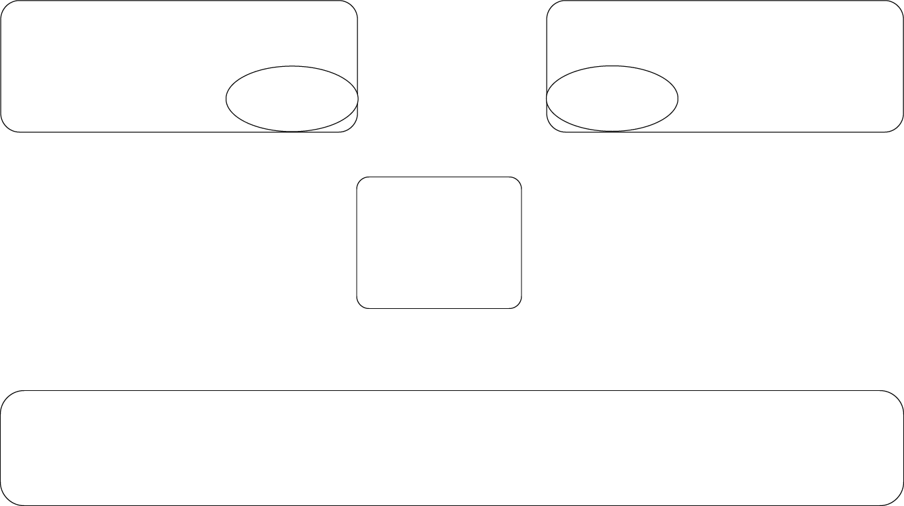
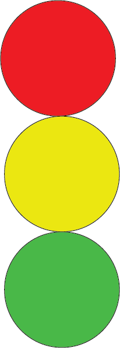
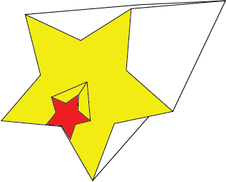

Start by opening illustrator and selecting the “Common” document preset (1366 x 768 px) underneath of the Web tab, then click Create.
Create a pair of horizontally long rectangles that touch the top left and right corners of the page, respectively, that are roughly parallel to the vertical-center of the page. They should not meet in the middle. These rectangles should each be 540 pixels wide and 200 pixels tall.
Create two ellipses, each 200 pixels wide and 100 pixels tall. Align each of them to the corner of each rectangle closest to the center of the page.
Select each of the rectangles with the Selection Tool. Smooth out the edges of each rectangle by clicking and dragging one of the circles inside of the rectangle, adjacent to the corners.
Create a 250-pixel wide, 200-pixel tall rectangle with a center aligned with the center of the frame. Use the same method as before to smooth out its edges.
Create one final rectangle that covers the bottom of the frame entirely with a width of 1366 pixels (matching that width we set for the document,) and a height of 175 pixels. Smooth out its edges using the same method as before.

Hoangnhat Nguyen - hnguye78.github.io/avt2172018hn/Projects/E3_King_trafficlight.html

Meagan Trenchard - meagantrenchard.github.io/AVT217/PROGRAMMERANDCOMPUTER.html
